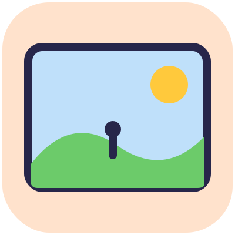
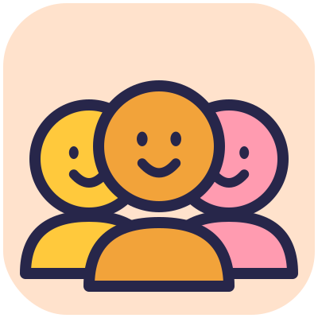
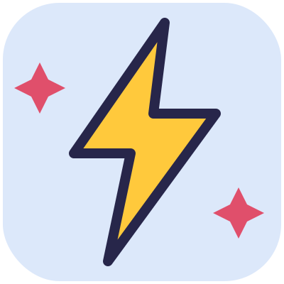
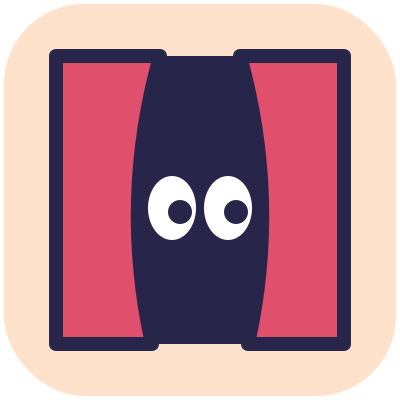
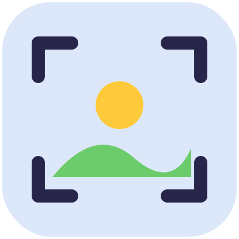
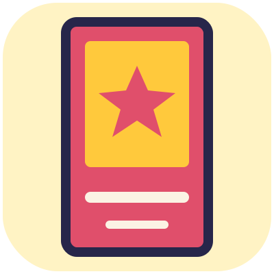
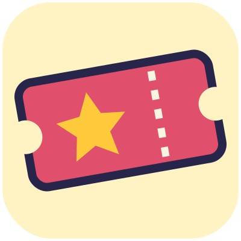
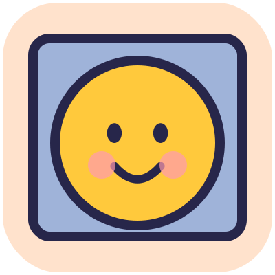
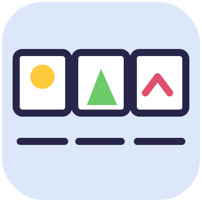
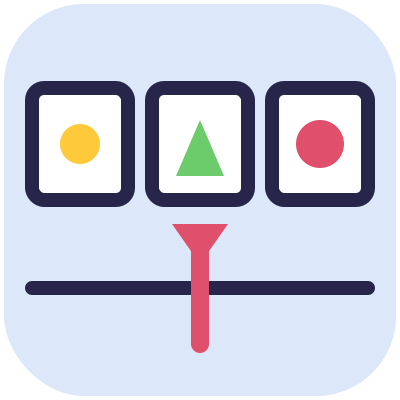

Le parole del cinema
Quando incontri una parola nuova nel libro, cercala qui.

Campo lungo
L'attore è piccolo e vediamo tutto il mondo attorno: capiamo dove si trova. (Missione 11)

Cast
Tutti gli attori di un film. Nel tuo, può essere anche solo uno! (Missione 10)
Ciak
La tavoletta che si batte prima di ogni ripresa. Quando il regista dice «Ciak!», il film comincia. (Missione 1)
Colonna sonora
Tutta la musica di un film. In Animatoon la scegli con il pulsante Musica. (Missione 13)

Colpo di scena
Il momento in cui succede qualcosa che nessuno si aspettava. (Missioni 5 e 9)

Dietro le quinte
La zona nascosta, fuori dalla scena, dove gli attori aspettano il loro turno. (Missione 3)

Dissolvenza
Una scena sfuma piano piano nell'altra. Serve per far passare il tempo. (Missione 14)

Inquadratura
Quello che si vede dentro lo schermo in un certo momento, come guardare da un rettangolo. (Missione 11)

Locandina
Il manifesto del film, con il titolo, un disegno e uno slogan. (Missione 16)
Montaggio
Mettere le scene nell'ordine giusto e scegliere come passare dall'una all'altra. È il lavoro di Regia e montaggio.

Prima
La prima volta che il film viene mostrato al pubblico. (Missione 8)

Primo piano
L'attore è grande e vicinissimo: vediamo cosa prova. (Missione 11)
Regista
Chi decide cosa succede nel film e dice «Ciak!». Sei tu!
Sceneggiatura
La storia scritta, con le cose che i personaggi dicono. È il lavoro di Storia e sceneggiatura.

Scorrimento
La scena scivola di lato e ne entra un'altra. Va bene per viaggi e inseguimenti. (Missione 14)
Set
Il posto dove si gira un film. Il nostro è il tuo tavolo, i tuoi disegni e lo schermo di Animatoon.

Storyboard
La storia disegnata a riquadri, come un fumetto, prima di girare. (Missione 5 e appendici)

Taglio secco
Una scena finisce e l'altra comincia di colpo. Perfetto per una sorpresa o per far ridere. (Missione 14)

Timeline
La striscia con i riquadri della storia in Animatoon: uno per ogni parte del film. (Missione 5)
Titoli di coda
I nomi di chi ha fatto il film, che scorrono alla fine. I tuoi sono quelli della squadra! (Missione 8)
Voce fuori campo
Una voce che si sente, ma chi parla non si vede sullo schermo. (Missioni 3 e 7)